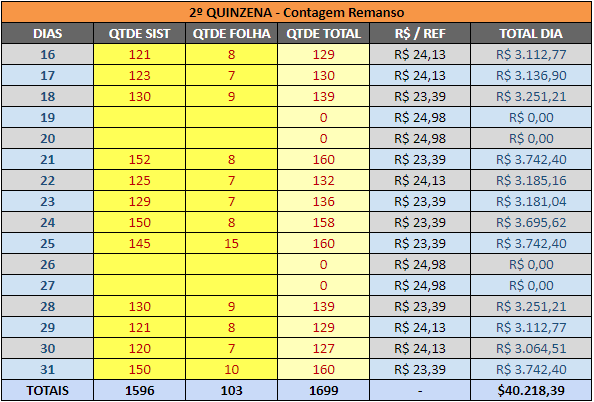

O rateio da It's Cool é feito com base na nossa planilha do drive que faz o rateio de forma automática
A primeira coisa a ser feita nela é o preenchimento da coluna "QTDE SIST" com as quantidades diárias de alimentação com base no relatório que recebemos pelo email da Administração
Ainda não sei
São encaminhados emails na caixa delegada da Administração com a planilha de rateio, alteramos a alocação das despesas com base nas informações contidas nelas
Ambos são modificados com base no uso do serviço de cartório por cada setor e as despesas são alocadas para os mesmos, sempre que chegar algum comprovante verificar quem utilizou o serviço para o lançamento futuro
Apesar destes lançamentos serem alterados os rateis com base nas viagens feitas durante o mês, quem lança estas despesas são as meninas do setor de Viagens
Estes tipos de lançamentos são menos complexos, pois assim que chegam as notas/faturas o que precisamos fazer é substituir o valor que está no Sapiens pelo valor correto, verificar a data de vencimento desta OC para utilizar o orçamento do mês correto e então liberar para a aprovação.
Abaixo temos os lançamentos que se enquadram neste perfil: